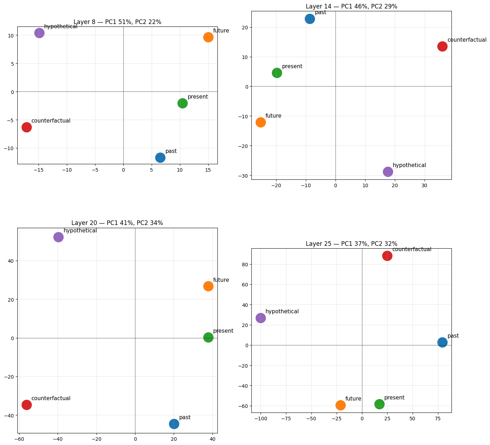

# This Python 3 environment comes with many helpful analytics libraries installed# It is defined by the kaggle/python Docker image: https://github.com/kaggle/docker-python# For example, here's several helpful packages to loadimport numpy as np # linear algebraimport pandas as pd # data processing, CSV file I/O (e.g. pd.read_csv)# Input data files are available in the read-only "../input/" directory# For example, running this (by clicking run or pressing Shift+Enter) will list all files under the input directoryimport osfor dirname, _, filenames in os.walk('/kaggle/input'): for filename in filenames: print(os.path.join(dirname, filename))# You can write up to 20GB to the current directory (/kaggle/working/) that gets preserved as output when you create a version using "Save & Run All" # You can also write temporary files to /kaggle/temp/, but they won't be saved outside of the current session# Use the kagglehub client library to attach Kaggle resources like competitions, datasets, and models to your session# Learn more about kagglehub: https://github.com/Kaggle/kagglehub/blob/main/README.mdimport kagglehub# kagglehub.dataset_download('<owner>/<dataset-slug>')
# Tier-2 leaf libs pinned exactly. Tier-1 (torch/CUDA/python) inherited from the# pinned Kaggle image — do NOT pip-install torch here or you'll break the GPU.#%pip install -q "sae-lens==6.44.2" "transformer-lens==2.18.0" "sae-dashboard==0.7.2" "numpy==1.26.4"import osos.environ["PYTORCH_CUDA_ALLOC_CONF"] = "expandable_segments:True"os.environ["HF_HOME"] = "/tmp/hf" # ephemeral scratch, not /contentfrom kaggle_secrets import UserSecretsClientos.environ["HF_TOKEN"] = UserSecretsClient().get_secret("HF_TOKEN")import torchtorch.set_grad_enabled(False)device = "cuda" if torch.cuda.is_available() else "cpu"# Fail fast if the leaf install disturbed tier-1:print("torch", torch.__version__, "| cuda", torch.version.cuda, "| device", device)assert device == "cuda", "GPU not visible — check Accelerator setting / install didn't swap torch"
torch 2.10.0+cu128 | cuda 12.8 | device cuda
Load model and SAE
In [3]:
from sae_lens import SAE, HookedSAETransformer# This avoids staging model in CPU RAM during loadmodel = HookedSAETransformer.from_pretrained( "google/gemma-2-2b", dtype=torch.float32, device=device, fold_ln=False, center_writing_weights=False, center_unembed=False, move_to_device=True,)model.eval()print(f"n_layers={model.cfg.n_layers}, d_model={model.cfg.d_model}")sae, cfg_dict, sparsity = SAE.from_pretrained( release="gemma-scope-2b-pt-res-canonical", sae_id="layer_20/width_16k/canonical", device=device)sae = sae.to(torch.bfloat16)allocated = torch.cuda.memory_allocated() / 1e9print(f"GPU allocated: {allocated:.1f}GB / 15GB")print(f"SAE d_sae: {sae.cfg.d_sae}, d_in: {sae.cfg.d_in}")print(sae.cfg.__dict__)
2026-06-19 11:25:59.067492: E external/local_xla/xla/stream_executor/cuda/cuda_fft.cc:467] Unable to register cuFFT factory: Attempting to register factory for plugin cuFFT when one has already been registered
WARNING: All log messages before absl::InitializeLog() is called are written to STDERR
E0000 00:00:1781868359.292954 155 cuda_dnn.cc:8579] Unable to register cuDNN factory: Attempting to register factory for plugin cuDNN when one has already been registered
E0000 00:00:1781868359.365838 155 cuda_blas.cc:1407] Unable to register cuBLAS factory: Attempting to register factory for plugin cuBLAS when one has already been registered
W0000 00:00:1781868359.901793 155 computation_placer.cc:177] computation placer already registered. Please check linkage and avoid linking the same target more than once.
W0000 00:00:1781868359.901833 155 computation_placer.cc:177] computation placer already registered. Please check linkage and avoid linking the same target more than once.
W0000 00:00:1781868359.901836 155 computation_placer.cc:177] computation placer already registered. Please check linkage and avoid linking the same target more than once.
W0000 00:00:1781868359.901838 155 computation_placer.cc:177] computation placer already registered. Please check linkage and avoid linking the same target more than once.
`torch_dtype` is deprecated! Use `dtype` instead!
Loaded pretrained model google/gemma-2-2b into HookedTransformer
n_layers=26, d_model=2304
/tmp/ipykernel_155/1363097899.py:17: DeprecationWarning: Unpacking SAE objects is deprecated. SAE.from_pretrained() now returns only the SAE object. Use SAE.from_pretrained_with_cfg_and_sparsity() to get the config dict and sparsity as well.
sae, cfg_dict, sparsity = SAE.from_pretrained(
Reproduction of days-of-weeksFrom paper:NOT ALL LANGUAGE MODEL FEATURES AREONE-DIMENSIONALLY LINEAR: https://arxiv.org/pdf/2405.14860(residual PCA at layer 15)
In [4]:
import numpy as npfrom sklearn.decomposition import PCAimport matplotlib.pyplot as pltDAYS = ["Monday", "Tuesday", "Wednesday", "Thursday", "Friday", "Saturday", "Sunday"]# Multiple templates per day to average out template-specific variationTEMPLATES = [ "Today is {}", "She said it was {}", "Yesterday was {}", "I'll see you on {}", "The meeting is on {}", "He arrived on {}", "The deadline was {}", "School starts on {}",]LAYER = 20def last_token_resid(prompt: str, layer: int = LAYER) -> np.ndarray: tokens = model.to_tokens(prompt) _, cache = model.run_with_cache( tokens, names_filter=f"blocks.{layer}.hook_resid_post", return_type=None, ) return cache[f"blocks.{layer}.hook_resid_post"][0, -1].float().cpu().numpy()# (7, n_templates, d_model)day_vecs = np.stack([ np.stack([last_token_resid(t.format(d)) for t in TEMPLATES]) for d in DAYS])# Mean across templates → (7, d_model)day_means = day_vecs.mean(axis=1)# PCA to 4 components (we'll plot 1-2, but 3-4 are diagnostic)pca = PCA(n_components=4)day_pca = pca.fit_transform(day_means)# Plotfig, axes = plt.subplots(1, 2, figsize=(14, 7))# PC1 vs PC2ax = axes[0]ax.scatter(day_pca[:, 0], day_pca[:, 1], s=300, c=range(7), cmap="hsv")for i, day in enumerate(DAYS): ax.annotate(day, (day_pca[i, 0], day_pca[i, 1]), fontsize=12, xytext=(10, 10), textcoords="offset points")# Connect in calendar order, close the looploop = list(range(7)) + [0]ax.plot(day_pca[loop, 0], day_pca[loop, 1], "k--", alpha=0.3)ax.set_xlabel(f"PC1 ({pca.explained_variance_ratio_[0]:.1%} var)")ax.set_ylabel(f"PC2 ({pca.explained_variance_ratio_[1]:.1%} var)")ax.set_title(f"Days of week, layer {LAYER} residual (PC1/PC2)")ax.set_aspect("equal")ax.grid(alpha=0.3)# PC3 vs PC4 — should look like noise if days are truly 2Dax = axes[1]ax.scatter(day_pca[:, 2], day_pca[:, 3], s=300, c=range(7), cmap="hsv")for i, day in enumerate(DAYS): ax.annotate(day, (day_pca[i, 2], day_pca[i, 3]), fontsize=12, xytext=(10, 10), textcoords="offset points")ax.set_xlabel(f"PC3 ({pca.explained_variance_ratio_[2]:.1%} var)")ax.set_ylabel(f"PC4 ({pca.explained_variance_ratio_[3]:.1%} var)")ax.set_title("PC3/PC4 — should be noise if structure is truly 2D")ax.set_aspect("equal")ax.grid(alpha=0.3)plt.tight_layout()plt.show()print(f"Variance explained: {pca.explained_variance_ratio_}")print(f"Cumulative: {np.cumsum(pca.explained_variance_ratio_)}")
# Find SAE features that activate on day promptsdef features_active_on(prompt: str, threshold: float = 1.0): acts, _ = get_feature_acts(prompt, layer=LAYER) active = (acts[-1] > threshold).nonzero().squeeze(-1) return active.cpu().numpy()# Union of features active on any day promptday_feature_set = set()for d in DAYS: for t in TEMPLATES: day_feature_set.update(features_active_on(t.format(d)).tolist())day_features = sorted(day_feature_set)print(f"Found {len(day_features)} candidate features active on day prompts")# Get their decoder vectors → (n_features, d_model)W_dec = sae.W_dec.float().cpu().numpy() # (d_sae, d_model)day_decoders = W_dec[day_features]# PCA the decoder vectorspca_dec = PCA(n_components=4)dec_pca = pca_dec.fit_transform(day_decoders)# This plot won't directly show a 7-day circle — it shows clustering # structure across ALL features active on day prompts. The circle # emerges when you find the subcluster of ~7-14 features that # specifically co-activate by day.plt.figure(figsize=(8, 8))plt.scatter(dec_pca[:, 0], dec_pca[:, 1], alpha=0.6)plt.title("SAE decoder vectors for day-active features (PC1/PC2)")plt.xlabel("PC1"); plt.ylabel("PC2")plt.show()
max act: 2040.0 | nonzero: 7208
max act: 2040.0 | nonzero: 7313
max act: 2040.0 | nonzero: 7231
max act: 2040.0 | nonzero: 7475
max act: 2040.0 | nonzero: 7314
max act: 2040.0 | nonzero: 7234
max act: 2040.0 | nonzero: 7276
max act: 2040.0 | nonzero: 7285
max act: 2040.0 | nonzero: 7203
max act: 2040.0 | nonzero: 7308
max act: 2040.0 | nonzero: 7222
max act: 2040.0 | nonzero: 7475
max act: 2040.0 | nonzero: 7310
max act: 2040.0 | nonzero: 7239
max act: 2040.0 | nonzero: 7274
max act: 2040.0 | nonzero: 7282
max act: 2040.0 | nonzero: 7210
max act: 2040.0 | nonzero: 7308
max act: 2040.0 | nonzero: 7225
max act: 2040.0 | nonzero: 7475
max act: 2040.0 | nonzero: 7310
max act: 2040.0 | nonzero: 7238
max act: 2040.0 | nonzero: 7271
max act: 2040.0 | nonzero: 7280
max act: 2040.0 | nonzero: 7202
max act: 2040.0 | nonzero: 7314
max act: 2040.0 | nonzero: 7229
max act: 2040.0 | nonzero: 7475
max act: 2040.0 | nonzero: 7313
max act: 2040.0 | nonzero: 7238
max act: 2040.0 | nonzero: 7268
max act: 2040.0 | nonzero: 7283
max act: 2040.0 | nonzero: 7218
max act: 2040.0 | nonzero: 7316
max act: 2040.0 | nonzero: 7234
max act: 2040.0 | nonzero: 7468
max act: 2040.0 | nonzero: 7309
max act: 2040.0 | nonzero: 7233
max act: 2040.0 | nonzero: 7274
max act: 2040.0 | nonzero: 7284
max act: 2040.0 | nonzero: 7193
max act: 2040.0 | nonzero: 7307
max act: 2040.0 | nonzero: 7219
max act: 2040.0 | nonzero: 7470
max act: 2040.0 | nonzero: 7310
max act: 2040.0 | nonzero: 7233
max act: 2040.0 | nonzero: 7268
max act: 2040.0 | nonzero: 7276
max act: 2040.0 | nonzero: 7211
max act: 2040.0 | nonzero: 7312
max act: 2040.0 | nonzero: 7232
max act: 2040.0 | nonzero: 7470
max act: 2040.0 | nonzero: 7311
max act: 2040.0 | nonzero: 7235
max act: 2040.0 | nonzero: 7280
max act: 2040.0 | nonzero: 7281
Found 429 candidate features active on day prompts
import sys, os, globhits = glob.glob("/kaggle/input/**/temporal.py", recursive=True)assert hits, "temporal.py not found under /kaggle/input — is the dataset attached?"sys.path.insert(0, os.path.dirname(hits[0]))from temporal import ALL_TEMPORAL_CATEGORIES
Geometry at 8, 14, 20, 25 layers
In [8]:
LAYERS = [8, 14, 20, 25]def last_token_resid(prompt: str, layer: int): tokens = model.to_tokens(prompt) _, cache = model.run_with_cache( tokens, names_filter=f"blocks.{layer}.hook_resid_post", return_type=None, ) return cache[f"blocks.{layer}.hook_resid_post"][0, -1].float()# Compute category means at every layerORDERED_CATS = ["past", "present", "future", "counterfactual", "hypothetical"]resid_means_by_layer = {} # layer -> {cat: tensor(d_model,)}for L in LAYERS: resid_means_by_layer[L] = {} for cat in ORDERED_CATS: vecs = [last_token_resid(p, L) for p in ALL_TEMPORAL_CATEGORIES[cat]] resid_means_by_layer[L][cat] = torch.stack(vecs).mean(0) print(f"Layer {L} done")
# Plot PCA grid: 2x2 layers, PC1/PC2 eachimport numpy as npfrom sklearn.decomposition import PCAimport matplotlib.pyplot as pltcolors = ["#1f77b4", "#2ca02c", "#ff7f0e", "#d62728", "#9467bd"]fig, axes = plt.subplots(2, 2, figsize=(14, 14))for ax, L in zip(axes.flat, LAYERS): M = torch.stack([resid_means_by_layer[L][c] for c in ORDERED_CATS]).cpu().numpy() M = M - M.mean(0, keepdims=True) pca = PCA(n_components=2) P = pca.fit_transform(M) for i, cat in enumerate(ORDERED_CATS): ax.scatter(P[i, 0], P[i, 1], s=400, c=colors[i]) ax.annotate(cat, (P[i, 0], P[i, 1]), fontsize=11, xytext=(10, 10), textcoords="offset points") ax.set_title(f"Layer {L} — PC1 {pca.explained_variance_ratio_[0]:.0%}, " f"PC2 {pca.explained_variance_ratio_[1]:.0%}") ax.axhline(0, color="k", lw=0.4); ax.axvline(0, color="k", lw=0.4) ax.grid(alpha=0.3); ax.set_aspect("equal")plt.tight_layout()plt.show()

Temporal category means at layer 20
In [10]:
# === STEP 1: Compute category means (last-token aggregation) ===from temporal import ALL_TEMPORAL_CATEGORIEScategory_means_sae = {} # category -> mean SAE activation vector (d_sae,)category_means_resid = {} # category -> mean residual stream vector (d_model,)for cat_name, prompts in ALL_TEMPORAL_CATEGORIES.items(): sae_vecs = [] resid_vecs = [] for p in prompts: # SAE features (uses your existing get_feature_acts) acts, _ = get_feature_acts(p, layer=20) sae_vecs.append(acts[-1]) # Raw residual (for the Engels-style PCA) tokens = model.to_tokens(p) _, cache = model.run_with_cache( tokens, names_filter="blocks.20.hook_resid_post", return_type=None, ) resid_vecs.append(cache["blocks.20.hook_resid_post"][0, -1].float()) category_means_sae[cat_name] = torch.stack(sae_vecs).mean(0) category_means_resid[cat_name] = torch.stack(resid_vecs).mean(0) print(f"{cat_name:>15}: {len(prompts)} prompts processed")
max act: 2040.0 | nonzero: 7539
max act: 2040.0 | nonzero: 7409
max act: 2040.0 | nonzero: 7524
max act: 2040.0 | nonzero: 7504
max act: 2040.0 | nonzero: 7503
max act: 2040.0 | nonzero: 7528
max act: 2040.0 | nonzero: 7508
max act: 2040.0 | nonzero: 7520
max act: 2040.0 | nonzero: 7691
max act: 2040.0 | nonzero: 7531
max act: 2040.0 | nonzero: 7645
max act: 2040.0 | nonzero: 7846
max act: 2040.0 | nonzero: 7893
max act: 2040.0 | nonzero: 7535
max act: 2040.0 | nonzero: 7723
max act: 2040.0 | nonzero: 7597
max act: 2040.0 | nonzero: 7454
max act: 2040.0 | nonzero: 7613
max act: 2040.0 | nonzero: 7564
max act: 2040.0 | nonzero: 7724
past: 20 prompts processed
max act: 2040.0 | nonzero: 7547
max act: 2040.0 | nonzero: 7494
max act: 2040.0 | nonzero: 7498
max act: 2040.0 | nonzero: 7586
max act: 2040.0 | nonzero: 7653
max act: 2040.0 | nonzero: 7507
max act: 2040.0 | nonzero: 7781
max act: 2040.0 | nonzero: 7417
max act: 2040.0 | nonzero: 7550
max act: 2040.0 | nonzero: 7392
max act: 2040.0 | nonzero: 7493
max act: 2040.0 | nonzero: 7570
max act: 2040.0 | nonzero: 7713
max act: 2040.0 | nonzero: 7620
max act: 2040.0 | nonzero: 7567
max act: 2040.0 | nonzero: 7579
max act: 2040.0 | nonzero: 7456
max act: 2040.0 | nonzero: 7476
max act: 2040.0 | nonzero: 7780
max act: 2040.0 | nonzero: 7566
present: 20 prompts processed
max act: 2040.0 | nonzero: 7641
max act: 2040.0 | nonzero: 7522
max act: 2040.0 | nonzero: 7558
max act: 2040.0 | nonzero: 7594
max act: 2040.0 | nonzero: 7581
max act: 2040.0 | nonzero: 7584
max act: 2040.0 | nonzero: 7663
max act: 2040.0 | nonzero: 7790
max act: 2040.0 | nonzero: 7721
max act: 2040.0 | nonzero: 7666
max act: 2040.0 | nonzero: 7563
max act: 2040.0 | nonzero: 7727
max act: 2040.0 | nonzero: 7591
max act: 2040.0 | nonzero: 7613
max act: 2040.0 | nonzero: 7546
max act: 2040.0 | nonzero: 7372
max act: 2040.0 | nonzero: 7408
max act: 2040.0 | nonzero: 7619
max act: 2040.0 | nonzero: 7618
max act: 2040.0 | nonzero: 7609
future: 20 prompts processed
max act: 2040.0 | nonzero: 7935
max act: 2040.0 | nonzero: 8004
max act: 2040.0 | nonzero: 8128
max act: 2040.0 | nonzero: 8183
max act: 2040.0 | nonzero: 7943
max act: 2040.0 | nonzero: 8124
max act: 2040.0 | nonzero: 8238
max act: 2040.0 | nonzero: 8123
max act: 2040.0 | nonzero: 8023
max act: 2040.0 | nonzero: 7977
max act: 2040.0 | nonzero: 7697
max act: 2040.0 | nonzero: 7868
max act: 2040.0 | nonzero: 7912
max act: 2040.0 | nonzero: 7928
max act: 2040.0 | nonzero: 7986
max act: 2040.0 | nonzero: 7992
max act: 2040.0 | nonzero: 7873
max act: 2040.0 | nonzero: 7783
max act: 2040.0 | nonzero: 7685
max act: 2040.0 | nonzero: 7886
counterfactual: 20 prompts processed
max act: 2040.0 | nonzero: 7829
max act: 2040.0 | nonzero: 7854
max act: 2040.0 | nonzero: 8083
max act: 2040.0 | nonzero: 7973
max act: 2040.0 | nonzero: 7870
max act: 2040.0 | nonzero: 7886
max act: 2040.0 | nonzero: 7926
max act: 2040.0 | nonzero: 7876
max act: 2040.0 | nonzero: 8087
max act: 2040.0 | nonzero: 7886
max act: 2040.0 | nonzero: 7775
max act: 2040.0 | nonzero: 7857
max act: 2040.0 | nonzero: 7934
max act: 2040.0 | nonzero: 8015
max act: 2040.0 | nonzero: 8054
max act: 2040.0 | nonzero: 8279
max act: 2040.0 | nonzero: 7804
max act: 2040.0 | nonzero: 7836
max act: 2040.0 | nonzero: 7734
max act: 2040.0 | nonzero: 7958
hypothetical: 20 prompts processed
max act: 2040.0 | nonzero: 8065
max act: 2040.0 | nonzero: 7430
max act: 2040.0 | nonzero: 7641
max act: 2040.0 | nonzero: 7597
max act: 2040.0 | nonzero: 7673
max act: 2040.0 | nonzero: 7861
max act: 2040.0 | nonzero: 7523
max act: 2040.0 | nonzero: 7679
max act: 2040.0 | nonzero: 8263
max act: 2040.0 | nonzero: 7745
max act: 2040.0 | nonzero: 7456
max act: 2040.0 | nonzero: 7660
max act: 2040.0 | nonzero: 7432
max act: 2040.0 | nonzero: 7689
max act: 2040.0 | nonzero: 7903
max act: 2040.0 | nonzero: 7417
max act: 2040.0 | nonzero: 7797
max act: 2040.0 | nonzero: 7889
max act: 2040.0 | nonzero: 7673
max act: 2040.0 | nonzero: 7594
neutral: 20 prompts processed
top differential features per category
In [11]:
# === STEP 2: Find candidate features per category (vs neutral timeless) ===NP_URL = "https://neuronpedia.org/gemma-2-2b/20-gemmascope-res-16k/"def top_features_vs_neutral(category_name, k=15): diff = category_means_sae[category_name] - category_means_sae["neutral"] top = torch.topk(diff, k) return pd.DataFrame({ "feature_id": top.indices.tolist(), "diff_score": top.values.tolist(), f"{category_name}_mean": [category_means_sae[category_name][i].item() for i in top.indices], "neutral_mean": [category_means_sae["neutral"][i].item() for i in top.indices], "neuronpedia": [NP_URL + str(i.item()) for i in top.indices], })# For each temporal category, what are the top candidate features?for cat in ["past", "present", "future", "counterfactual", "hypothetical"]: print(f"\n=== {cat.upper()} ===") print(top_features_vs_neutral(cat).to_string(index=False))